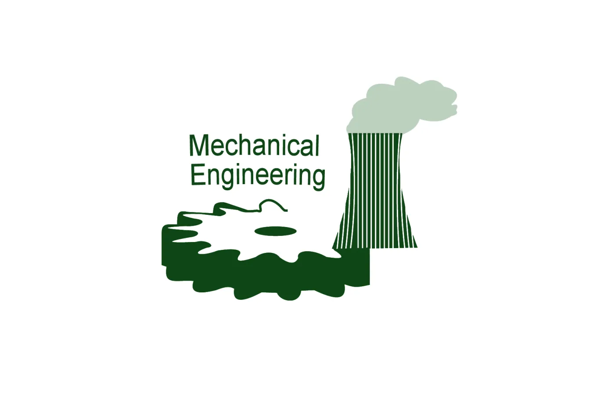
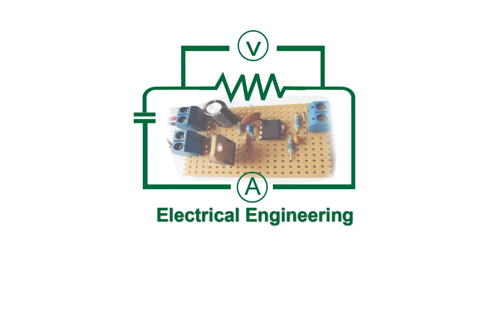
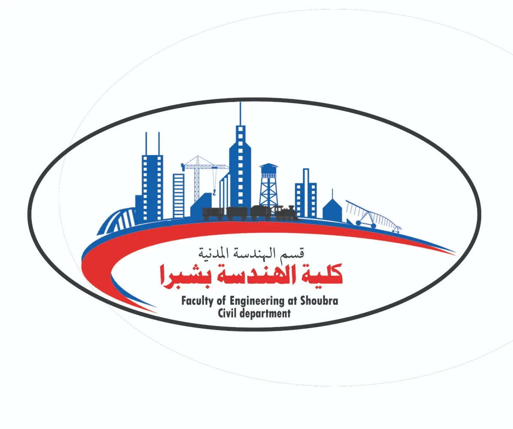

Studies in this department began with the establishment of the college in 1961, offering a
general program until 1981. At that point, two specialized tracks were introduced: the
Mechanical Power Engineering program and the Mechanical Design and Production Engineering program.

